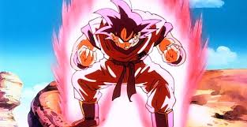
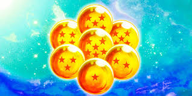

The Legend of Goku

A Saiyan Raised on Earth
Goku, originally named Kakarot, is a Saiyan warrior who was sent to Earth as an infant to conquer the planet. However, a severe head injury shortly after his arrival completely erased his violent nature and aggressive programming. Raised by the kind-hearted martial artist Grandpa Gohan, Goku grew up to become Earth's greatest defender. Throughout his life, he has constantly pushed past his physical and mental limits through intense training and sheer willpower. His insatiable love for fighting strong opponents has led him to face intergalactic tyrants, androids, and even gods of destruction. Despite his immense power, Goku maintains a pure heart and a child-like innocence that often surprises his enemies. He is always willing to offer his opponents a second chance, believing that anyone can change for the better. Ultimately, his journey is a testament to the power of hard work, friendship, and never giving up.

The Dragon Balls are mystical, orange orbs adorned with crimson stars that serve as the core artifact of the entire series. When all seven spheres are gathered together from across the globe, they have the power to summon the eternal dragon, Shenron. Once summoned, this massive, serpentine dragon can grant almost any single wish within its power before scattering the balls across the planet once more. Over the years, these artifacts have been used for noble causes, such as reviving fallen friends and restoring destroyed planets. However, they have also attracted the attention of evil forces who seek immortality or universal domination. The constant race to find the Dragon Balls before the villains do creates intense, high-stakes adventures for Goku and his allies. The lore surrounding them expands later in the series, revealing even larger and more powerful variants like the Super Dragon Balls. These legendary orbs are the driving force behind the most epic battles in anime history.